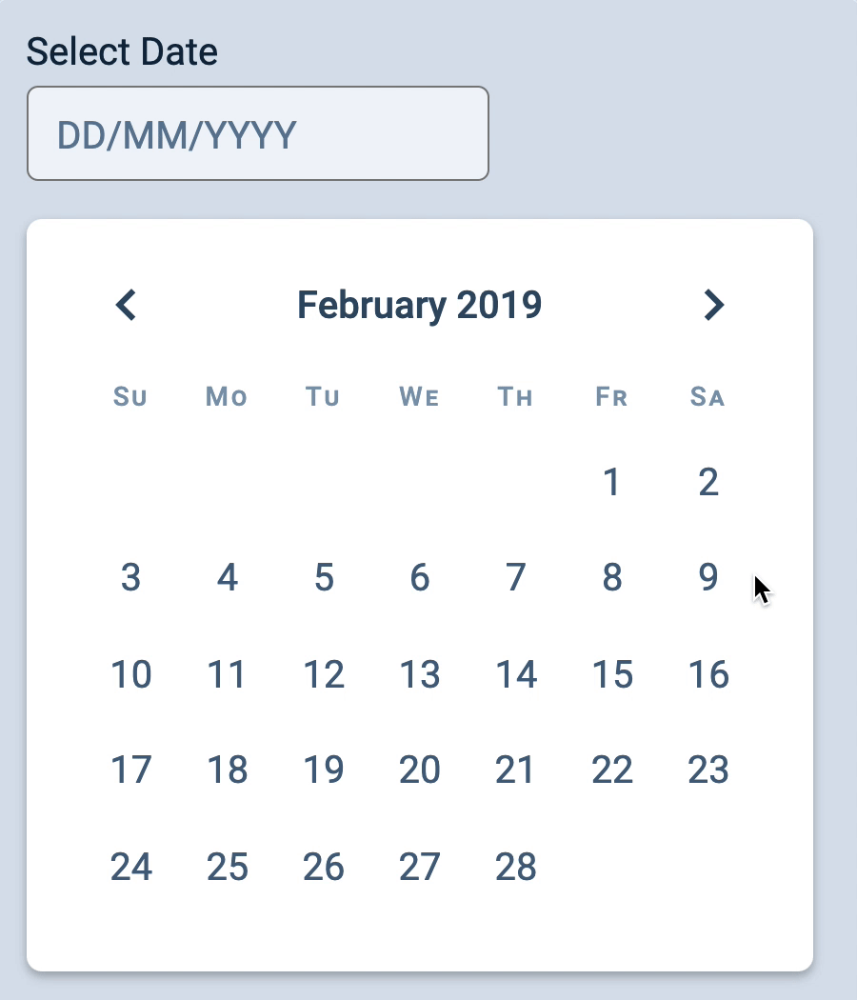
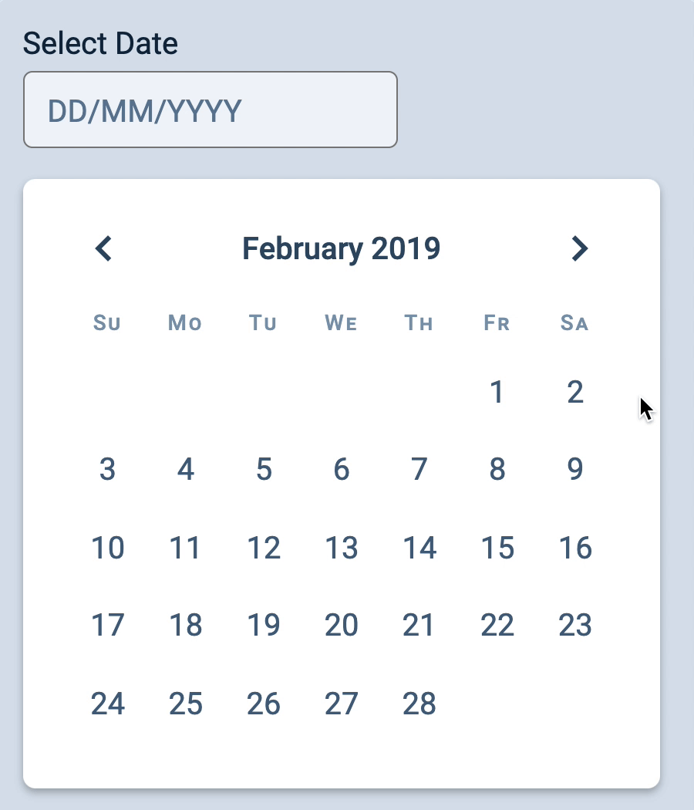

We want to do two things when a user clicks a date in the date grid:
Highlight the selected date on the Datepicker
Format and output the selected date to the input field

Highlighting the selected date
First, we need to add an event listener to the date grid. (We’ll use the event delegation pattern as usual). This event listener needs to be in createDatepicker
And we’ll remove the is-selected class from other dates.
dategrid.addEventListener('click', event => {
if (!event.target.matches('button')) return
const button = event.target
const buttons = [...button.parentElement.children]
// Showing the selected class
buttons.forEach(button => button.classList.remove('is-selected'))
button.classList.add('is-selected')
})
Showing the selected date in the input field
To show the selected date in the input field, we have to:
Figure out what date is selected
Formate the date for output
Display the formatted date in the input field
Figuring out what date is selected
Each date in the dategrid contains a <time> element. You can look at the datetime attribute to get the selected date.
dategrid.addEventListener('click', event => {
// ...
const time = button.firstElementChild
const datetime = time.getAttribute('datetime')
const selectedDate = new Date(datetime)
})
Once again, we should not create dates with a date string. Things can break easily. We should create dates with the arguments approach.
To create a date with the argument approach, we can use the datetimeToDate function. But we need to edit datetimeToDate to work with date strings that contain days.
Pay attention to the console. Notice formatted gives you single digit numbers (whenever possible) for days and months? We wanted DD/MM/YYYY, so we need a two-digit string!
We can use toTwoDigitString to convert day and month into two-digit strings.
The input gets updated when the user clicks on a date. But the browser refreshes since we put the Datepicker in a <form>.

This is because buttons inside a <form> sometimes gets treated as submit buttons. In this case, our buttons aren’t submit buttons. We can tell browsers they’re just buttons by setting type to button.